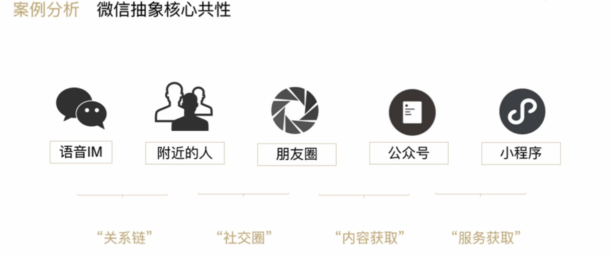

一、5年收获4亿用户，云音乐背后的规模化策略
A.覆盖用户少？品类/功能拓展，实现指数增长
1.三个阶段
- 冷启动阶段：从0到1
- 规模化阶段：大规模增长
- 生态阶段：有影响力后
2.增长就是不断遇到瓶颈不断突破的过程
3.产品规模化的3个方法
- 品类/功能拓展，实现用户覆盖范围的增长
- 人群拓展与融合
- 社交大数据
4.品类拓展：优先考虑非功能性的品类拓展
- 识别趋势=》硬核用户=》大众用户
- 识别：深挖数据、看长尾、看趋势
- 发展：品类特点、用户特点、传播路径
5.功能拓展：影响功能
- 功能设计：提升用户体验、小版本更新；功能拓展：实现产品阶段式增长、大版本更新
- 功能拓展的关键：抓住核心共性


- 核心共性会越来越抽象，增长效应也越来越大
6.培养抽象核心共性能力
- 提升逻辑能力，透过现象看本质
- 判断行业发展趋势及产品未来的定位
- 回看互联网优秀产品的版本更新记录
- 有意识地积累、实践、复盘
- 吸收失败的经验和教训
B.用户群单一？人群拓展，成为用户的最佳选项
1.两个角度：拉新、融合
2.拉新：找到最容易拓展的人群、形成差异化的特色
3.融合：与老用户融合、提升留存实现增长
4.找到最容易拓展人群—思路：
- 产品本身满足的需求特点是怎样的
- 什么样的人群对这个需求最大、最刚性
- 这个人群和现有人群关系是怎样的
5.找到最容易拓展人群—方法：
- 内容型产品：关注尚没有被现在主流内容所影响的人群
- O2O型产品：一线城市=》学生人口密集城市
- 思考方法：结合用户消费习惯，触达方式等
6.学生用户对产品粘性高
7.差异化的特色
- 人群特点和产品方向结合度
- 思考竞争对手薄弱点和自身优势
- 考虑成本和收益
8.用户群差异不宜过大：年龄差异小=》内容消费接近
9.选择用户群：优先考虑人口属性
10.品牌调性/增加品牌价值
- 鼓励差异存在
- 内容的分发上，要给用户阶段性的体验
- 维持品牌价值，避免被稀释
C.用户易流失？社交X大数据，提升用户粘性
1.为什么产品一定要社交？
- 提高UGC的积极性和粘性
- 没有互动，消费者依赖偏低
2.社交来扩大用户规模
- 明显兴趣点区隔：优先选择已经存在的兴趣点、人口属性、考虑用户形成群落的因素
- 用户分层、分群体精细化运营：使用户分层突出、清晰用户分层（不做广场、个性推荐和UGC）、激发用户表达和共鸣（创造平等氛围、降低参与门槛）
- 裂变、壮大、再裂变：提供方便的工具（标签、关注、分类、圈子、小组）
3.大数据
- 提升效率：分发效率、运营效率、投放效率
- 数据意识
- 精细化数据分析
- 看数据的变化和趋势
- 看数据对比
- 找到关键性数据（一般性经验、具体情况需要分析和数据验证）
- 数据约等于效率（洞察、辅助决策【提升团队效率、提高决策准确度】）
4.大数据冷启动
- 在有限的场景使用大数据
- 爬取用户数据/投放到大数据流量平台
D.其他
1.会员是一种身份认同感，一种标识感
2.有魔性的产品=心流
3.产品本身不过关，再怎么裂变也不行
二、年增速8倍，解读严选的选品原则
A.爆品打造：从第一条毛巾上新开始
1.策划期
- 1）爆款的5个维度
- 市场潜力：确定目前市场存量，或者潜在增量
- 用户需求：找到用户共性与个性
- 流行趋势：结合市场热点与世界流行趋势
- 价格优势：毛利25%-30%
- 品质感：高于用户对它的期望值
2.生产期：商品与供应商管理
- 1）采购计划
- 销售预期考虑生命周期细分维度：四季款、个性化潮品款、季节性款
- 补货计划从全品类“一刀切”改进为细分品类：跑量款、拉新款、刺激性消费款
- 大促/店庆等特殊时期，做特殊备货处理：乘以特殊系数
- 2）采购执行
- 供应商采购交互流程化
- 供应商可实时查看商品售卖情况与轮转周期
- 供应商系统实时查询采购订单进度和付款进度
- 3）商品管理-定价
- 商品定位：不同定位的商品毛利率标准也不同
- 市场环境：包括市场供求关系竞品分析等
- 用户心理：性价比最高的商品不一定是卖的最好的
- 商品成本：25%-30%的毛利空间
- 4）供应商管理-生产过程管理
- 原料备货，计划共享
- 生产进度共享
- 严选库存共享
- 5）供应商管理-报价管理
- 规划报价流程
- 原料价格参考
- 优化供应商
- 6）供应商管理-质量改进管理
- 平台通过流量吸引优质商家和用户
- 品牌通过优质商品形成竞争壁垒吸引用户
- 7）供应商管理-考核
- 淘汰劣质供应商
- 提高优质供应商的合作效率
- 8）供应商管理-商务、采购工作指标
- 商务 ：商品成本、质量、供应商服务、优质供应商比例
- 采购：库存积压系、缺货率、交货准确率
3.推广期：爆品的推广与运营
- 1）抓住用户需求：策划者不能发明用户需求，只能发现用户需求
- 2）抓住时机：每次热点都是一个机会，跟热点三观要正
B.品类拓展：布局14000个SKU
1.品类拓展的4个维度
- 1）用户分析
- 从用户数据中，寻找增长点：年龄、学历、性别、收入、品牌习惯喜好
- 高毛利高复购率商品提升品牌认知度
- 调整商品结构带来女性用户流量
- 从差异化用户中，寻找共同需求
- 2）市场分析
- 根据市场需求分析，规划品类增长点
- 用户习惯、审美
- 具象商品也需要根据用户需求定制
- 3）自有优势：从爆款到一个品类
- 用户反馈：提建议、样品试用 、选款式
- 社群运营：社群原则、用户是核心、社群运营
- 用户评论：评论数据、差评监控
2.商品规划与布局
- 1）商品定位与数量占比
- 设计师款、跑量款、高利润款
- 2）商品生命周期与销量预期
- 商品定价毛利率要满足各个阶段的运营促销活动后的最终毛利率目标
- 按商品生命周期的阶段性控制运营活动
- 3）赛马机制
- A类商品：销量且口碑双优，有爆款潜力
- B类商品：大多数商品，将对其进行迭代升级
- C类商品：消化库存为主，不再更新补货
3.商品规范化管理
- 1）新品立项流程：
- 提报立项：商品专员填写商品相关信息
- 系统数据评估：未来销售与盈亏预测、类目库转判断
- 商品组长&类目负责人审批：商品组长与类目负责人审核项目是否可以立项，参与评审会
- 现场评审：由商品、品控、运营、市场、设计、计划跟单、数据、渠道、客服各部门参与评审会，品控对风险项商品进行一票否决
- 商品总监线上审批：评审会80%以上得票率
- 2）品控
- 立项：参与其中，对于高风险商品有否决权
- 选厂：全面考察厂商技术专利、流程把控能力等等
- 选品：通过第三方检测报告，才能进入采购流程
- 生产：监督流程规范性，生产模式标准化
- 质检：产前产中产后三道把控
C.流量突破：线上渠道挖掘与线下布局
1.优势渠道深耕：自有流量挖掘
- 1）严选线上流量：深挖优质渠道
- 利用网易邮箱：了解用户的属性和兴趣点
- 做好拉新和复购：通过定向推广、优惠券运营提升转化率
- 主动调整用户结构：跳出邮箱，通过商品品类，吸引女性群体
- 2）严选的高转化率：
- 商详页的精心打磨
- 商品本身是提升转化率的关键
- 3）自有流量挖掘：
- 网易云音乐：女性、85后
- 考拉：一线、二线的白领和母亲，口碑与社群裂变
2.线上多渠道铺设：电商&社交
- 1）电商渠道：其他电商合作
- 京东：自营物流、男性、消费高、决策快
- 一条：微信大号、粉丝矩阵、用户高收入高教育水平
- 亚米网：海外电商、海外华人
- 2）社交渠道
- 阿里&腾讯的业务结合
- 提供新的工作岗位
- 社交裂变，精准传播
- 网易推手：高额奖励、爆款运营（帮推手选）、超级推手
- 3）拼多多分析
- 底层数据梳理
- 获得爆品
- 向三四线城市推广发散
- 运营手段：底价策略，刺激用户
- 利润放在用户端，让用户自主扩散和传播，让用户受益
3.线下渠道拓展：新零售布局
- 1）线上与线下
- 线上只占零售的15%
- 线上增量放缓
- 线上获客遭遇瓶颈
- 线下模式更全面解决消费需求
- 线上成功经移植到线下
- 多元化的用户体验
- 线上价格优势削弱
- 2）三个发展方向
- 商超：盒马鲜生，数据管理，线上线下联动
- 百货：银泰，会员制
- 便利店：全家、罗森，社群周边，第三方与自主品牌
三、小团队X冷启动，蜗牛读书背后的3层洞察
A.产品洞察：免费读书1小时的战略思考
1.产品概念期，定义产品，制定产品战略
2.免费1小时的产品策略
- 1）痛点+需求——变革
- 2）行业分析要素：国家政策、互联网程度、技术、竞品策略
- 3）用户分析：新老用户、轻重用户、大R小R、定性研究、定量研究
- 4）分析、判断新模式的4个维度：
- 用户首要感知核心行为唤起：让用户在感知上容易接受，容易产生行动
- 用户行为路径：优化用户体验，让用户决策更坚决
- 用户行为塑造：巩固用户习惯，形成高留存
- 行业影响：有变革就会有阻挠，要寻找共同利益，推动模式认可
- 5）模式变革会受到既定规则约束，但符合用户需求的模式最终会得到行业认可
3.如何打造产品价值观
- 1）业务要克制：业务围绕读书为“核心”做收敛
- 2）产品要聚集：产品设计围绕“时间”元素做延展，聚集产品核心思考角度：核心路径是什么、希望引导的行为、刺激物与核心元素是否强关联
4.如何营造社区氛围
- 1）支付宝
- 横向扩展功能、场景
- 架设社区
- 激发人情味
- 2）蜗牛读书：相似用户、共同话题、持续讨论、相同调性
- 引入高质量内容：从高往低，从低往高
- 提供优质UGC工具
- 社群域外支持
- 3）什么是好的社群？
- 主动制止问题
- 志愿者运营
- 有益的内容与互动
- 4）如何运营社群？
- 建立代管机制
- 依托业务重点
- 建立激励机制
B.运营洞察：KOL的争夺战
1.达人、明星、KOL（关键意见领袖）->流量去中心化
2.KOL诉求：把控流量，掌握主动性；平台诉求：提升增量KOL，服务存量KOL
3.如何找到合适的KOL——精准定位
- 机构、大V：影响力强，用户量大，诉求明确、效果可预期，无忠诚度预期
- 中V：有一定用户量、影响力，需求匹配度高、共生关系
- 超级用户：深度用户、高消费用户，对平台依赖性强，需求易满足
4.如何争夺KOL——差异化服务
- KOL关注：流量、粉丝、服务、变现
5.KOL争夺的深度思考：模式设计
- 1）颠覆性模式：内容/服务完全颠覆现有模式/体验，完全替代当下主流平台
- 2）补充性模式：内容/服务提供有价值的补充，可以满足存量KOL其他需求
- 3）竞争模式关键要素：
- 平台迁移：是否存在用户使用核心路径发生大规模迁移的趋势和可能
- 内容/服务：对现有的内容/服务进行了颠覆还是补充
- 商业模式：对现有的商业模式进行改造或者革命
- 体验：是否带给了用户全新的使用体验
4）如何用有限流量提升UGC数量及质量？
- 重点匹配能提高热度的问题、内容
- 持续追踪热点话题
5）如何看待KOL衍生服务？
- 聚集资源，形成打样效应
- 寻找合作伙伴，形成集群效应
C.活动策划：以小博大撬动百万增粉
1.活动目标与活动设计的关联
- 1）三个点：
- 时间：节气、节假日、纪念日
- 资源：开发、运营市场
- 玩法：紧扣活动目标、已验证、微创新
- 2）四个要素：
- 锚定活动核心
- 整合启动流量
- 刺激用户参与
- 优化粉丝沉淀
2.产品设计的核心要素
- 1）戳心文案——引爆流量
- 2）内容筛选维度
3.流量获取和裂变
- 1）启动流量
- 2）持续流量——刺激用户持续参与